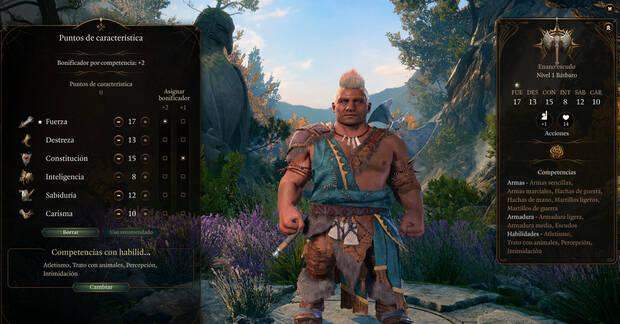
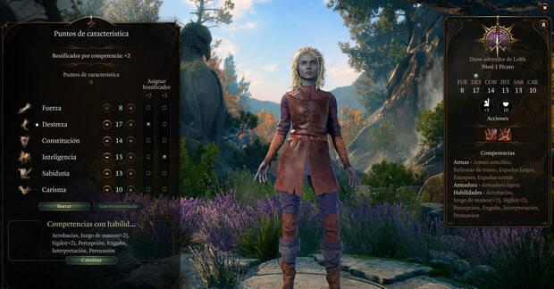
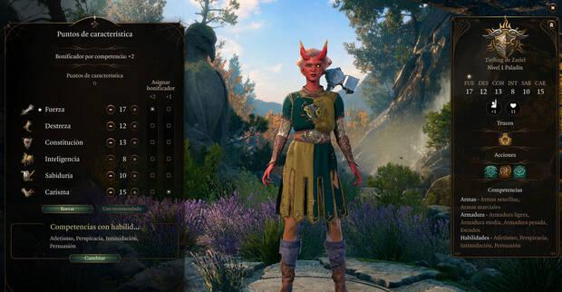
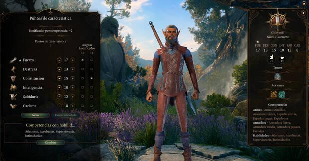

Hemos preparado una lista con las mejores construcciones de personaje con las que puedes comenzar. Basándonos en las clases más accesibles y recomendadas para principiantes, a continuación te presentamos las mejores builds.
Guía de Baldur's Gate III
Las mejores builds para principiantes
Mejor build de Bárbaro Berserker

- Raza: Enano
- Subraza: Enano escudo
- Clase: Bárbaro
- Subclase: Berserker
- Transfondo: Soldado
- Habilidades: Atletismo e intimidación
- Armas preferibles: Armas pesadas de dos manos
El Bárbaro Berserker es una build excelente para comenzar ya que ofrece un personaje con una enorme cantidad de daño cuerpo a cuerpo, una altísima resistencia y una presición casi infalible para no fallar ataques. El punto más fuerte del Bárbaro Berserker es la habilidad innata Frenesí, tu personaje aumenta su resistencia física y obtiene ventaja de pruebas y tiradas de salvación de fuerza durante 10 turnos mientras se mantenga haciendo daño en cada uno de ellos. Si decides crear esta build y quieres un equipo equilibrado, te recomendamos acompañarlo con un Pícaro, un Clérigo y un Mago.
Mejor build de Pícaro ladrón

- Raza: Drow
- Clase: Pícaro
- Subclase: Ladrón
- Transfondo: Huérfano
- Habilidades: Juego de manos y sigilo
- Armas preferibles: Dagas y arcos
El pícaro es una clase muy versátil, su sigilo en combate y su habilidad de realizar ataques furtivos te proporciona un personaje con una enorme presición tanto a distancia como cuerpo a cuerpo. Puede hacer mucho daño y camuflarse para asestar sus golpes con rapidez. Esta build se puede construir con las siguientes configuraciones: El Pícaro ladrón es una muy buena elección si te gusta escabullirte en batallas y manejar a un experto en el arte de forzar cerraduras, desarmar trampas y hurgar en los bolsillos de los demás. Y también, no menos importante, podrás persuadir o engañar en el ámbito social.
Mejor build de Paladín rompejuramentos

- Raza: Tieflin
- Subraza: Tiefling de Zarie
- Clase: Paladín
- Subclase: Rompejuramento
- Transfondo: Soldado
- Habilidades: Atletismo e intimidación
- Armas preferibles: Armas de dos manos
- Conjuros: Bendición/ Orden imperiosa/ Castigo atronador/ Escudo de Fe/ Curar Heridas
Los Paladines son muy buenos en múltiples escenarios. Estos personajes se especializan en causar mucho daño cuerpo a cuerpo, pero también poseen cierta magia para derrotar a sus rivales y causar diversos estados beneficiosos. Esta build se puede construir con las siguientes configuraciones: La subclase de Rompejuramentos solo la puedes desbloquear rompiendo tu juramento, por ejemplo, jurando proteger a un inocente y luego matarlo. Convertirse en Rompejuramentos te da la ventaja de aumentar tus capacidades de daño además de controlar criaturas no muertas o espectrales.
Mejor build de Guerrero maestro de combate

- Raza: Githyanki
- Clase: Guerrero
- Subclase: Maestro de combate
- Transfondo: Forastero
- Habilidades: Atletismo y supervivencia
- Armas preferibles: Armas de dos manos
- Maniobras: Ataque y desarme/ Ataque y empujón/ Contraataque
Los guerreros son combatientes de mucha versatilidad gracias a su disposición en el combate cuerpo a cuerpo y a distancia. Y además de las competencias con cualquier tipo de arma o armadura. Son perfectos para combatir y tienen muy buenas capacidades de supervivencia. Esta build se puede construir con las siguientes configuraciones: Esta build se centra en aprovechar competencias y rasgos de nuestro personaje para atacar con dos armas repetidas veces. Ya que el guerrero puede, por medio de habilidades -Acción súbita al llegar al nivel dos y Ataque adicional al llegar al nivel 5- golpear un elevado número de veces en un solo turno.